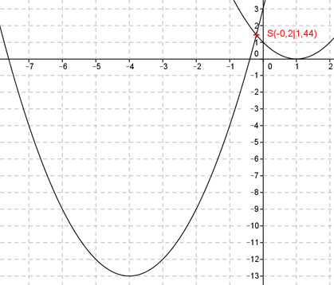

Aufgabe 49 In welchen Punkten schneiden sich die Parabel y = x2 + 8x + 3 und die Parabel y = x2 -2x + 1? Gleichsetzen: x2 + 8x + 3 = x2 - 2x + 1 | -x² 8x + 3 = - 2x + 1 |+2x 10x + 3 = 1 |-3 10x = -2 |:10 x = -0,2 Eingesetzt: y = (-0,2)2 - 2*(-0,2) + 1 = = 0,04 + 0,4 + 1 = 1,44 Schnittpunkt S(-0,2|1,44) 